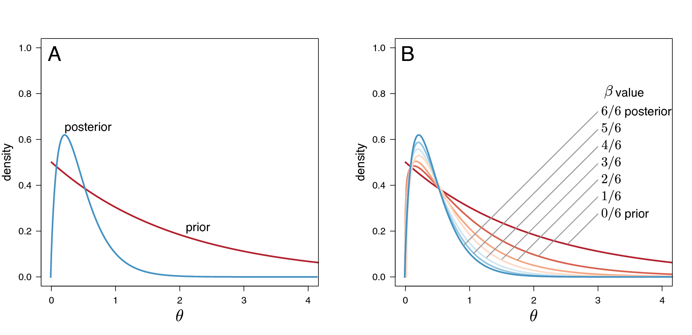

This tutorial provides the third protocol from our recent publication (Höhna et al. 2017). The first protocol is described in the Substitution model tutorial and the second protocol is described in the Partitioned data analysis tutorial.
This tutorial demonstrates some general principles of Bayesian model comparison, which is based on estimating the marginal likelihood of competing models and then comparing their relative fit to the data using Bayes factors. We consider the specific case of calculating Bayes factors to select among different substitution models.
For most sequence alignments, several (possibly many) substitution models of varying complexity are plausible a priori. We therefore need a way to objectively identify the model that balances estimation bias and inflated error variance associated with under- and over-parameterized models, respectively. Increasingly, model selection is based on Bayes factors [e.g., (Suchard et al. 2001; Lartillot 2006; Xie et al. 2011; Baele et al. 2012; Baele et al. 2013)], which involves first calculating the marginal likelihood of each candidate model and then comparing the ratio of the marginal likelihoods for the set of candidate models.
Given two models, $M_0$ and $M_1$, the Bayes-factor comparison assessing the relative fit of each model to the data, $BF(M_0,M_1)$, is:
The posterior odds is the posterior probability of $M_0$ given the data, $\mathbf X$, divided by the posterior odds of $M_1$ given the data:
and the prior odds is the prior probability of $M_0$ divided by the prior probability of $M_1$:
Thus, the Bayes factor measures the degree to which the data alter our belief regarding the support for $M_0$ relative to $M_1$ (Lavine and Schervish 1999):
Note that interpreting Bayes factors involves some subjectivity. That is, it is up to you to decide the degree of your belief in $M_0$ relative to $M_1$. Despite the absence of an absolutely objective model-selection threshold, we can refer to the scale [outlined by (Jeffreys 1961)] that provides a “rule-of-thumb” for interpreting these measures ().
| Strength of evidence | BF($M_0$,$M_1$)** | log(BF($M_0$,$M_1$)) | $log_{10}(BF(M_0$,$M_1))$ |
|---|---|---|---|
| Negative (supports $M_1$) | $<1$ | $<0$ | $<0$ |
| Barely worth mentioning | $1$ to $3.2$ | $0$ to $1.16$ | $0$ to $0.5$ |
| Substantial | $3.2$ to $10$ | $1.16$ to $2.3$ | $0.5$ to $1$ |
| Strong | $10$ to $100$ | $2.3$ to $4.6$ | $1$ to $2$ |
| Decisive | $>100$ | $>4.6$ | $>2$ |
Unfortunately, it is generally not possible to directly calculate the posterior odds to prior odds ratios. However, we can further define the posterior odds ratio as:
where $\mathbb{P}(\mathbf X \mid M_i)$ is the marginal likelihood of the data (this may be familiar to you as the denominator of Bayes Theorem, which is variously referred to as the model evidence or integrated likelihood). Formally, the marginal likelihood is the probability of the observed data ($\mathbf X$) under a given model ($M_i$) that is averaged over all possible values of the parameters of the model ($\theta_i$) with respect to the prior density on $\theta_i$
This makes it clear that more complex (parameter-rich) models are penalized by virtue of the associated prior: each additional parameter entails integration of the likelihood over the corresponding prior density. If you refer back to equation \eqref{eq:BF}, you can see that, with very little algebra, the ratio of marginal likelihoods is equal to the Bayes factor:
Therefore, we can perform a Bayes factor comparison of two models by calculating the marginal likelihood for each one. Alas, exact solutions for calculating marginal likelihoods are not known for phylogenetic models (see equation \eqref{eq:marginal_likelihood}), thus we must resort to numerical integration methods to estimate or approximate these values. In this exercise, we will estimate the marginal likelihood for each partition scheme using both the stepping-stone (Xie et al. 2011; Fan et al. 2011) and path sampling estimators (Lartillot 2006; Baele et al. 2012).
The models we use here are equivalent to the models described in the previous exercise on substitution models (continuous time Markov models). To specify the model please consult the previous exercise. Specifically, you will need to specify the following substitution models:
We will estimate the marginal likelihood of a given model using a
‘stepping-stone’ (or ‘path-sampling’) algorithm. These algorithms are
similar to the familiar MCMC algorithms, which are intended to sample
from (and estimate) the joint posterior probability of the model
parameters. Stepping-stone algorithms are like a series of MCMC
simulations that iteratively sample from a specified number of
distributions that are discrete steps between the posterior and the
prior probability distributions. The basic idea is to estimate the
probability of the data for all points between the posterior and the
prior—effectively summing the probability of the data over the prior
probability of the parameters to estimate the marginal likelihood.
Technically, the steps correspond to a series of powerPosteriors(),
where the likelihood is iteratively raised to a series of numbers
between 1 and 0 (Figure [fig:ss]). When the likelihood is raised to
the power of 1 (typically the first stepping stone), samples are drawn
from the (untransformed) posterior. By contrast, when the likelihood is
raised to the power of 0 (typically the last stepping stone), samples
are drawn from the prior. To perform a stepping-stone simulation, we
need to specify (1) the number of stepping stones (power posteriors)
that we will use to traverse the path between the posterior and the
prior (e.g., we specify 50 or 100 stones),
(2) the spacing of the stones between the posterior and prior
(e.g., we may specify that the stones are
distributed according to a beta distribution), (3) the number of samples
(and their thinning) to be drawn from each stepping stone, and (4) the
direction we will take (i.e., from the
posterior to the prior or vice versa).
 Estimating marginal likelihoods using stepping-stone simulation. Estimating the marginal likelihood involves integrating the likelihood of the data over the entire prior probability density for the model parameters.MCMC algorithms target the posterior probability density, which is typically concentrated in a small region of the prior probability density (A).Accordingly, standard MCMC simulation cannot provide unbiased estimates of the marginal likelihood because it will typically fail to explore most of the prior density.(B) Stepping-stone algorithms estimate the marginal likelihood by means of a series of MCMC-like simulations, where the likelihood is iteratively raised to a series of powers, effectively forcing the simulation to more fully explore the prior density of the model parameters.Here, six uniformly spaced stones span the posterior, where the power posterior is $\beta=6/6=1$, to the prior, where the power posterior is $\beta=0/6=0$.
This method computes a vector of powers from a beta distribution, then executes an MCMC run for each power step while raising the likelihood to that power. In this implementation, the vector of powers starts with 1, sampling the likelihood close to the posterior and incrementally sampling closer and closer to the prior as the power decreases.
Just to be safe, it is better to clear the workspace (if you did not just restart RevBayes):
clear()
Now set up the model as in the previous exercise. You should start with the simple Jukes-Cantor substitution model. Setting up the model requires:
PhyloCTMC.The following procedure for estimating marginal likelihoods is valid for
any model in RevBayes. You will need to repeat this later for other
models. First, we create the variable containing the power-posterior
analysis. This requires that we provide a model and vector of moves, as
well as an output file name. The cats argument sets the number of
stepping stones.
pow_p = powerPosterior(mymodel, moves, monitors, "output/model1.out", cats=50)
We can start the power-posterior analysis by first burning in the chain and and discarding the first 10000 states. This will help ensure that analysis starts from a region of high posterior probability, rather than from some random point.
pow_p.burnin(generations=10000,tuningInterval=1000)
Now execute the run with the .run() function:
pow_p.run(generations=1000)
Once the power posteriors have been saved to file, create a stepping stone sampler. This function can read any file of power posteriors and compute the marginal likelihood using stepping-stone sampling.
ss = steppingStoneSampler(file="output/model1.out", powerColumnName="power", likelihoodColumnName="likelihood")
These commands will execute a stepping-stone simulation with 50 stepping
stones, sampling 1000 states from each step. Compute the marginal
likelihood under stepping-stone sampling using the member function
marginal() of the ss variable and record the value in Table
[tab:ml_cytb].
ss.marginal()
Path sampling is an alternative to stepping-stone sampling and also takes the same power posteriors as input.
ps = pathSampler(file="output/model1.out", powerColumnName="power", likelihoodColumnName="likelihood")
Compute the marginal likelihood under stepping-stone sampling using the
member function marginal() of the ps variable and record the value
in Table [tab:ml_cytb].
ps.marginal()
As an example we provide the file RevBayes_scripts/marginalLikelihood_JukesCantor.Rev.
We have kept this description of how to use stepping-stone-sampling and path-sampling very generic and did not provide the information about the model here. Our main motivation is to show that the marginal likelihood estimation algorithms are independent of the model. Thus, you can apply these algorithms to any model, e.g., relaxed clock models and birth-death models, as well.
| Model | Path-Sampling | Stepping-Stone-Sampling |
|---|---|---|
| JC ($M_1$) | ||
| HKY ($M_2$) | ||
| GTR ($M_3$) | ||
| GTR+$\Gamma$ ($M_4$) | ||
| GTR+I ($M_5$) | ||
| GTR+$\Gamma$+I ($M_6$) |
Now that we have estimates of the marginal likelihood for each of our the candidate substitution models, we can evaluate their relative fit to the datasets using Bayes factors. Phylogenetic programs log-transform the likelihood values to avoid underflow: multiplying likelihoods (numbers $< 1$) generates numbers that are too small to be held in computer memory. Accordingly, we need to use a different form of equation [bfFormula] to calculate the ln-Bayes factor (we will denote this value $\mathcal{K}$):
where $\ln[\mathbb{P}(\mathbf X \mid M_0)]$ is the marginal lnL estimate for model $M_0$. The value resulting from equation [LNbfFormula] can be converted to a raw Bayes factor by simply taking the exponent of $\cal{K}$
Alternatively, you can directly interpret the strength of evidence in favor of $M_0$ in log space by comparing the values of $\cal{K}$ to the appropriate scale (Table [bftable], second column). In this case, we evaluate $\cal{K}$ in favor of model $M_0$ against model $M_1$ so that:
if $\mathcal{K} > 1$, model $M_0$ is preferred
if $\mathcal{K} < -1$, model $M_1$ is preferred.
Thus, values of $\mathcal{K}$ around 0 indicate that there is no preference for either model.
Using the values you entered in Table [tab:ml_cytb] and equation [LNbfFormula], calculate the ln-Bayes factors (using $\mathcal{K}$) for each model comparison. Enter your answers in Table [bfTable2] using the stepping-stone and the path-sampling estimates of the marginal log-likelihoods.
[bfTable2]
In this tutorial you have learned how to use RevBayes to assess the relative fit of a pool of candidate substitution models to a given sequence alignment. Typically, once we have identified the “best” substitution model for our alignment, we would then proceed to use this model for inference. Technically, this is a decision to condition our inferences on the selected model, which explicitly assumes that it provides a reasonable description of the process that gave rise to our data. However, there are several additional issues to consider before proceeding along these lines, which we briefly mention below.
In some or many situations the number of possible models to compare is large, e.g., choosing all possible combinations of substitution models (Huelsenbeck et al. 2004). Furthermore, imagine, for example, that there are several (possibly many) alternative models that provide a similarly good fit to our given dataset. In such scenarios, conditioning inference on any single model (even the ‘best’) ignores uncertainty in the chosen model, which can cause estimates to be biased. This is the issue of model uncertainty. The Bayesian framework provides a natural approach for accommodating model uncertainty by means of model averaging; we simply adopt the perspective that models (like standard parameters) are random variables, and integrate the inference over the distribution of candidate models. We will demonstrate how to accommodate model uncertainty using RevBayes in a separate tutorial, RB_ModelAveraging_Tutorial.
In this tutorial, we used Bayes factors to assess the fit of various substitution models to our sequence data, effectively establishing the relative rank of the candidate models. Even if we have successfully identified the very best model from the pool of candidates, however, the preferred model may nevertheless be woefully inadequate in an absolute sense. For this reason, it is important to consider model adequacy: whether a given model provides a reasonable description of the process that gave rise to our sequence data. We can assess the absolute fit of a model to a given dataset using posterior predictive simulation. This approach is based on the following premise: if the candidate model provides a reasonable description of the process that gave rise to our dataset, then we should be able to generate data under this model that resemble our observed data. We will demonstrate how to assess model adequacy using RevBayes in a separate tutorial, RB_ModelAdequacy_Tutorial.